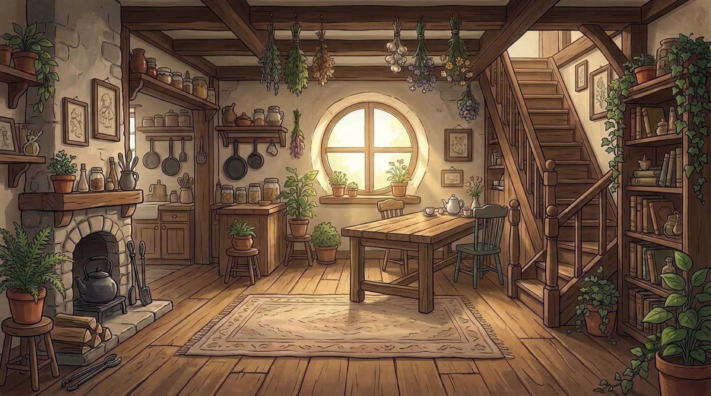
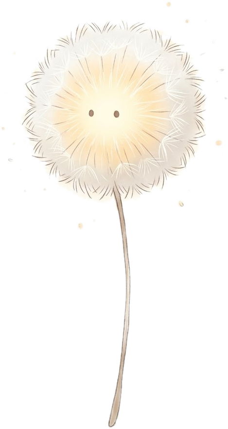
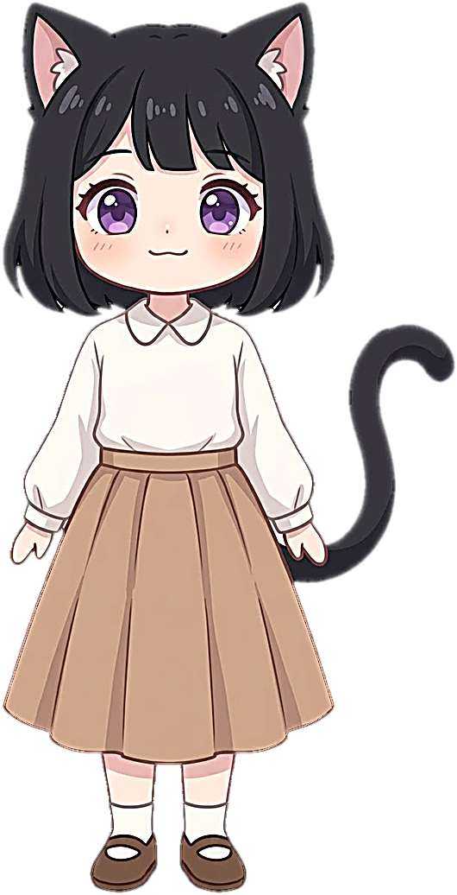
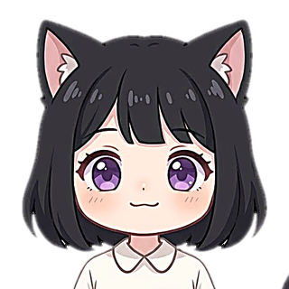
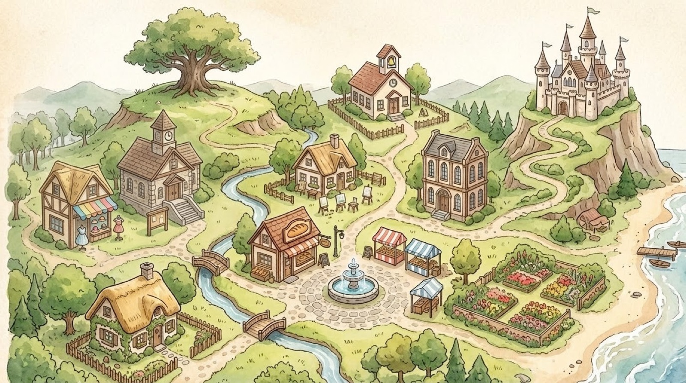

© 2026 Monster Pitcher. All rights reserved.
이 게임은 Monster Pitcher가 AI와 함께 만들었습니다. 그림·음악·코드·번역에 생성형 AI를 사용했습니다.
이 게임은 Monster Pitcher가 AI와 함께 만들었습니다. 그림·음악·코드·번역에 생성형 AI를 사용했습니다.

이름을 정해 주세요
✦

클릭 또는 스페이스

…
휴우…
3월
봄1년차10살
500
동생
엘리와의 사이
마을 평판 0 · 0
기운
3월 일정

기운
남는 돈 500
능력치
상태
가방
우리 집 텃밭
일기
외출

설정
글자 나오는 속도
음악 크기
움직임